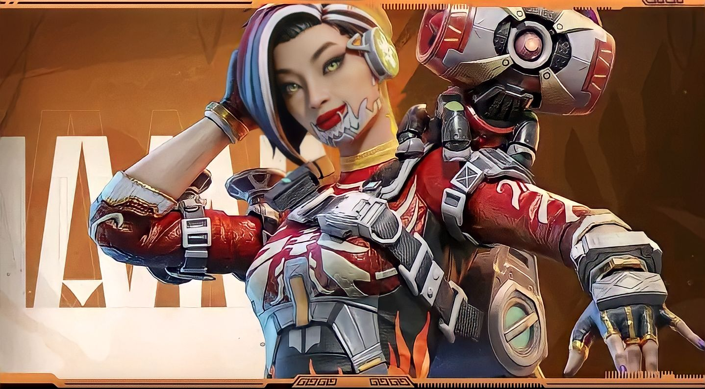

"Eu vi o outro lado, saco de carne. Não tem nada. Você não é nada."
Revenant costumava ser humano. Ele era o melhor assassino que o Consórcio dos Mercenários já teve. Ele costumava se olhar no espelho e ver seu rosto humano no reflexo. Mas o tempo muda tudo, e quando sua programação finalmente falhou, ele viu o que ele tinha se tornado nas mãos do Consórcio dos Mercenários e da Hammond Robotics: um pesadelo ambulante de aço e pedaços de carne. Seus mestres o ressuscitaram como um simulacro, retirando ele do abraço da morte repetidamente e o programando para esquecer disso.
Habilidade Tática: Silêncio
Habilidade Passiva: Stalker
Habilidade Suprema: Totem da Morte
Um novo passe de batalha com alguns cosméticos incríveis está disponível por um preço incrível! Desbloqueie o passe de batalha Aftershow por 299 Syndicate Gold. Este passe de batalha é mais curto do que o normal, mas ainda está repleto de recompensas incríveis!
Com Revenant chegam também os pesadelos neste modo por tempo limitado: é o Começo do Pesadelo! As Arcas de Suprimentos do Réquiem começaram a aparecer pelos Confins do Mundo e no Desfiladeiro do Rei.
Um misterioso benfeitor patrocina as entregas aéreas desta temporada dos Jogos Apex. Durante esse evento por tempo limitado, a taxa de chegada das entregas no mapa será maior, e elas virão com armas totalmente equipadas!
A Segunda Chance é um modo por tempo limitado do Battle Royale que permite que você se reanime instantaneamente quando os inimigos menos esperam. Espere até que seus inimigos baixem a guarda e dê o troco para sentir o gosto da vingança!
Nosso evento de fim de ano começa agora e vai até o ano novo! Participe dos eventos do festival para ganhar as moedas do evento: ouro e visuais épicos e lendários de Lendas e armamentos.
A Divisão Ranqueada da Temporada 3 terminará em 29 de novembro, às 22h BRT. As classificações serão redefinidas e a divisão seguinte começa no mesmo dia.
A nova Casa-Forte da Loja, Paraíso dos Vencedores, chegou. A nova Casa-Forte traz 6 recompensas cosméticas Eternas para Ash e Revenant!
Uma nova loja acabou de abrir, mantida por Xsolla. A Loja Online de Apex Legends Mobile conta com ofertas incríveis de Ouro do Consórcio e conjuntos únicos!
Passe completo de otimização para os mapas Desfiladeiro do Rei e Confins do Mundo.
Para mais informações sobre Apex Legends Mobile, visite nossa página de Perguntas Frequentes de Ajuda da EA e siga-nos no Twitter aqui!
Este anúncio pode mudar de acordo com a resposta da comunidade e o desenvolvimento e evolução constantes do nosso serviço ao vivo. Nós sempre buscamos manter a nossa comunidade o mais informada possível. Para saber mais, veja as atualizações do serviço online da EA.